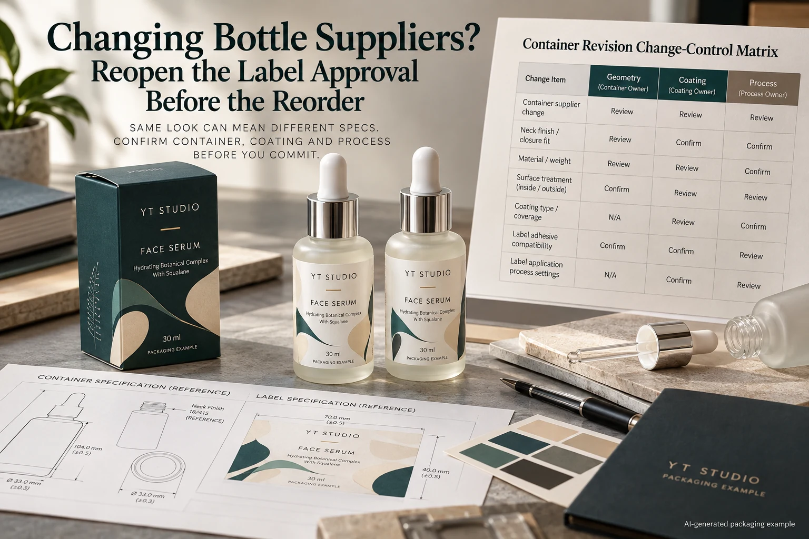
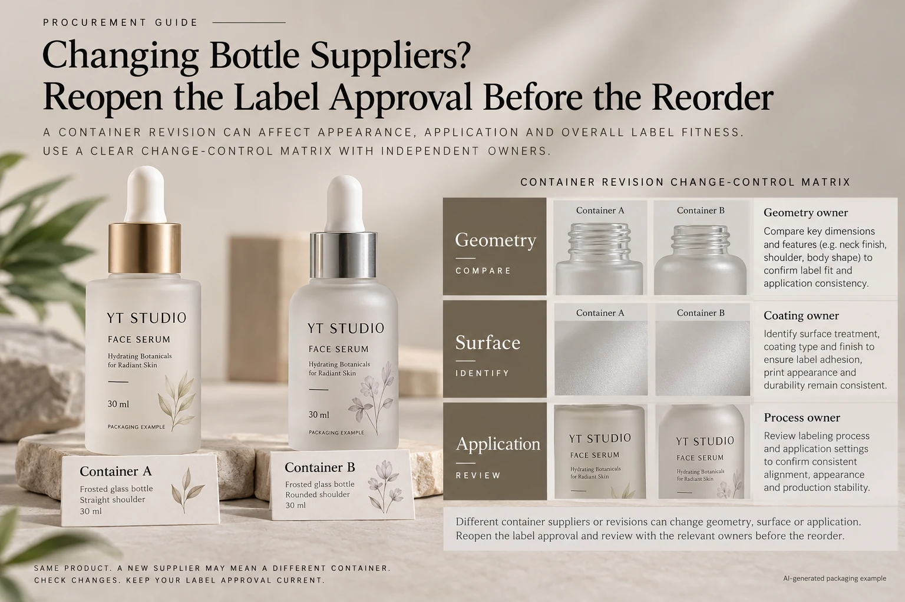

The replacement serum bottle looks like the old one. It has the same capacity, the same frosted appearance and a familiar dropper. Purchasing wants to reorder the label unchanged. The missing detail is whether the new container is actually the same application surface and geometry.
Treat a bottle-supplier change as a defined packaging change, even when the label itself remains unchanged. Identify what changed, connect each difference to the relevant approval and release only the combination supported by the new evidence. This is a review of the container transition, not a demand to redesign every repeat order.

A capacity description is not a container specification
Start with both supplier references, drawing revisions and relevant production batches. Keep an old accepted container and a representative new sample identifiable. A photograph can help people recognize them; it cannot establish surface chemistry, manufacturing tolerance or a shared coating.
Ask the container supplier which dimensions and surface treatments apply to the usable label panel. Is the frosted appearance part of the glass surface or a coating? Is the straight wall the same height? Has the taper, mould seam or base transition changed? Unknown details belong in the change record.
Avery's adhesion troubleshooting guidance names incompatible or contaminated surfaces among possible causes. It does not identify the cause on these hypothetical serum bottles. The useful procurement implication is to establish what the adhesive touches before assuming an old approval transfers.
Separate the changed container from the unchanged label
Obtain the released label construction and artwork rather than asking for something close to the previous order. If the first new-bottle comparison also changes the adhesive, film and preparation, the team may struggle to explain which difference matters.
Where practical, begin with the existing identified construction on the representative new container under an agreed procedure. Let the technical parties decide the appropriate review scope and any later candidate changes. This is a way to make the question interpretable, not a universal experimental design or a mandatory test count.
If the label supplier proposes a new construction, record it as a second change. Use the material-substitution matrix for its components. Do not hide a simultaneous bottle and label change inside a purchase-order description saying same as last time.
Use a change-to-approval matrix
| Difference or uncertainty | Decision reopened | Owner and evidence |
|---|---|---|
| Diameter, taper or label-panel height | Dieline fit, seam and placement | Container drawing, measured sample and artwork reviewer |
| Coating, resin or treatment reference | Attachment and preparation compatibility | Container supplier plus label technical contact |
| Filled appearance or finish | Readability and accepted visual reference | Brand review of representative assembled packs |
| Handling or line setup | Application and operating suitability | Receiving operator and a defined trial where needed |
| Unchanged fields | Whether an existing approval remains relevant | Named evidence and an accountable release decision |
Enter the old value, proposed value and source in each relevant row. Mark a field unchanged only when someone can support that statement. Route the open question to the party who can answer it; a label printer should not be expected to invent a bottle coating specification.
Next define the resulting review. A geometry change calls for fit evidence. An unknown coating calls for clarification and an agreed application evaluation. A new label applicator introduces an operating question. One attractive sample photograph cannot close all three.

Decide how to handle the transition stock
Check which bottle versions will reach the filling site and whether both remain in use during the changeover. If an acceptance covers only the old bottle, identify that limit on the release. Otherwise, a single label purchase may be consumed across two different container versions without anyone noticing.
Keep the container version connected to the filling plan and received-stock records. If the new container requires another label size or construction, distinguish those supply lines before ordering. Do not assume existing label stock can be used on the new bottle merely because it is the current artwork revision.
Use a bounded decision: accepted for a named bottle revision and application arrangement, pending another defined comparison, or not currently supported. The brand and technical owners should agree the disposition. This guide supplies no automatic acceptance rule or liability allocation.
Keep a proportionate review available
A hypothetical replacement is documented as the same panel geometry and an identified surface treatment. The relevant owners may be able to use a focused comparison and existing evidence to make a limited release. Repeating unrelated assessments would add work without necessarily improving the decision.
Another replacement has an unidentified coating and a slightly different taper. It has a reason to remain pending while the supplier clarifies the surface and the label fit is reviewed. A general statement that glass labels have worked before does not answer those particular gaps.
The distinction is evidence, not whether purchasing calls the change minor. Our reorder approval guide covers the broader repeat-order reference; this matrix records a container transition that an ordinary repeat cannot silently absorb.
Request a proposal tied to the new bottle reference
For cosmetic bottle labels, send both container references, drawings or measurements, surface information, current label construction and artwork, required quantity and transition plan. State which approval the new evidence needs to support.
The inquiry form prepares a message. Send the supporting files and photographs by email or WhatsApp; attachments are not uploaded by the form. Ask the label supplier to identify its proposed sample scope and any information still needed from the bottle manufacturer.